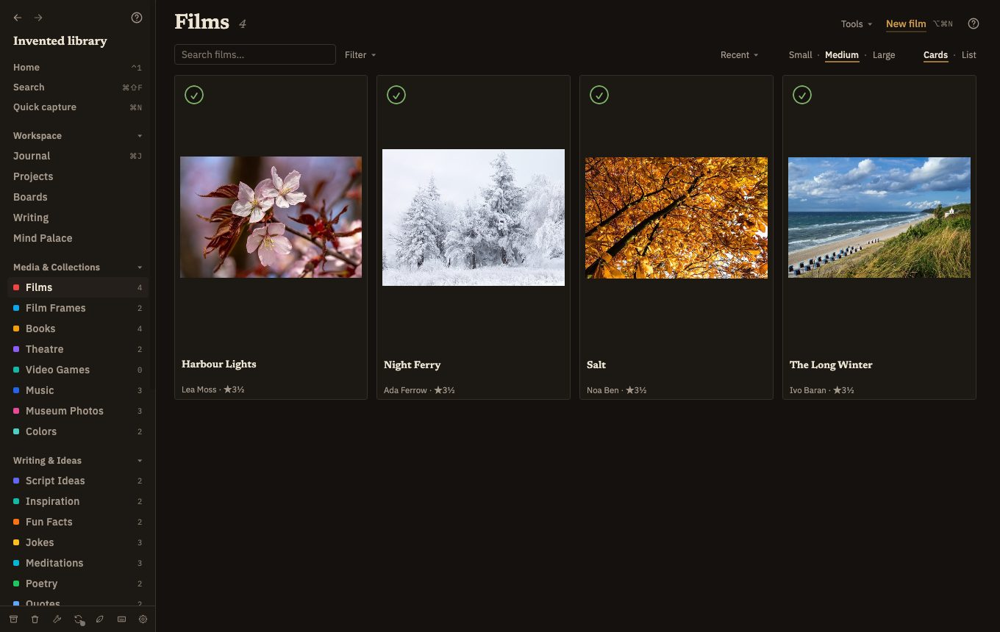
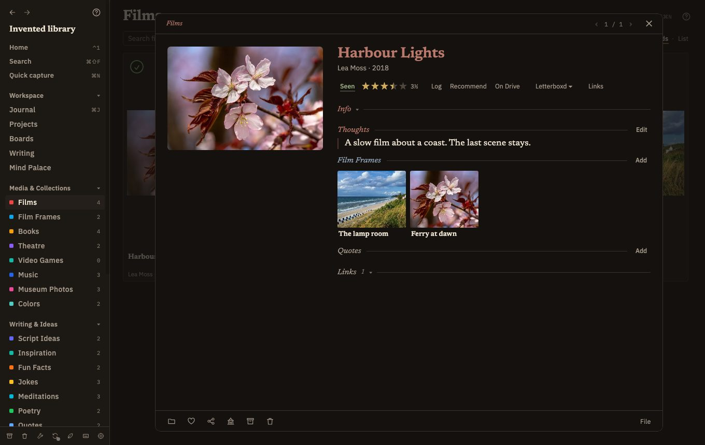
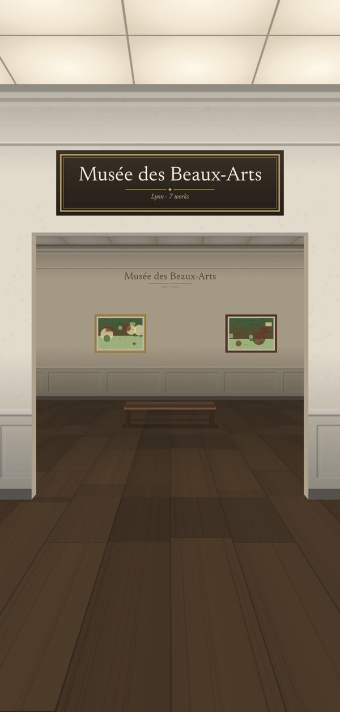
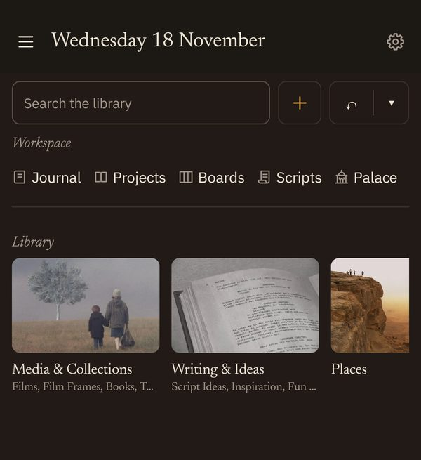

For Mac and Android
A library of your own.
Z Palace keeps the films you watch, the books you read, the people and places you know, and the notes you write, in one calm place. Underneath, it is a folder of plain files that belongs to you.
Free while it is in early testing · Mac version 1.18

A card for everything you watch, read and visit.
Films and series, books, albums, plays, paintings you stood in front of, places, and the people in your life. Search once and the details fill themselves in; rate it, write what you thought, link it to the rest.
- Covers and posters on a shelf, every row lined up
- Send your diary to Letterboxd, bring your Kobo highlights in
- Cards stay readable in any text editor

A journal, notebooks and the projects they turn into.
Write today's page in a line or a long evening. Keep notebooks with dividers, gather a project's notes on a board, write a script with proper pages. When you come back, Home shows where you left off.
A palace you can walk through.
Hang the things you want to remember in rooms of your own and walk them, the old way of remembering. Paintings, cards and notes keep the place you gave them.

Yours, as plain files.
Your library is a folder of Markdown files on your own computer, synced through storage you choose. Nothing is uploaded unless you ask, and if you stop using Z Palace tomorrow, every word is still there.
- Works offline; syncs through your own WebDAV folder
- Locked notes need your fingerprint or Touch ID
- Shared items are sealed before they leave the device
On the Mac and on your phone.
Mac
The whole library on a big screen: cards, journal, boards, scripts and the palace.
Version 1.18
Download for MacAndroid
Capture in a second, look things up, and read your library wherever you are.
Version 0.18
Download for Android
Made by one person, for keeping.
I made Z Palace because I wanted everything I write down, and everything I watch, read and visit, in one place that belongs to me. It is early. If something is odd, I would like to know.